Street Vicente Fighter · Auditoria visual 4.7.0
Branch de revisão. Pranchas de 688 quadros dos 12 lutadores, 208 quadros nativos de 13 inimigos e três mecanismos articulados. Clique na imagem para ampliar. As prévias são comprimidas; arte-fonte e atlas do jogo estão preservados.
Executar combate com a engine real · Relatório e limites da verificação · Medição de pixels e contatos · Cenários de combate
A inspeção em Chrome da versão corrigida permanece pendente de acesso à cópia privada. Fotografias originais não estão no repositório; retratos aprovados são a referência facial.
Marcelo · 104 quadros
Identidade e contato no chão
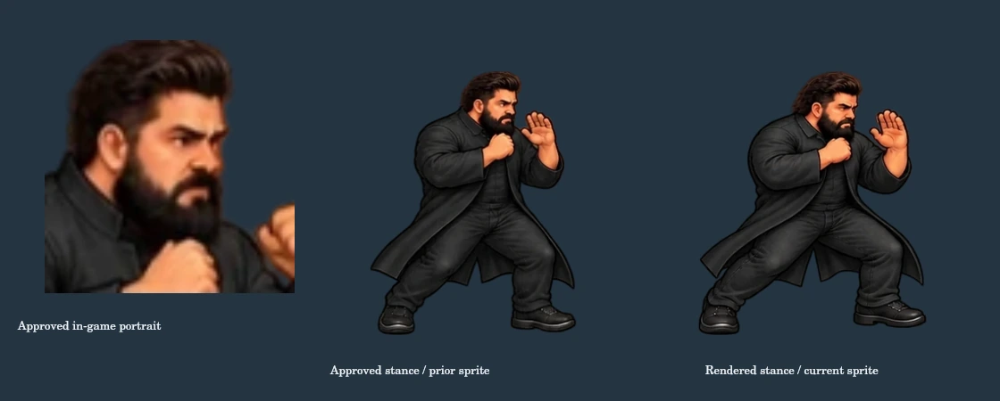
Antes · Retrato aprovado, postura original e postura renderizada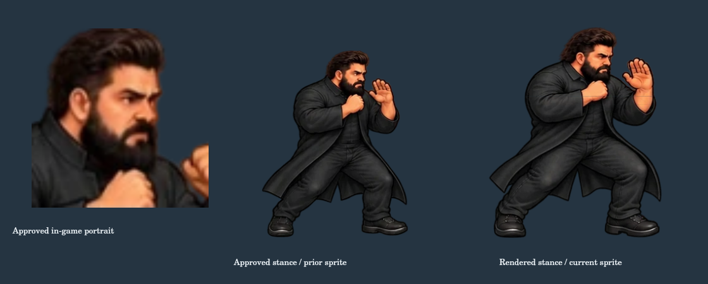
Depois · Retrato aprovado, postura original e postura renderizada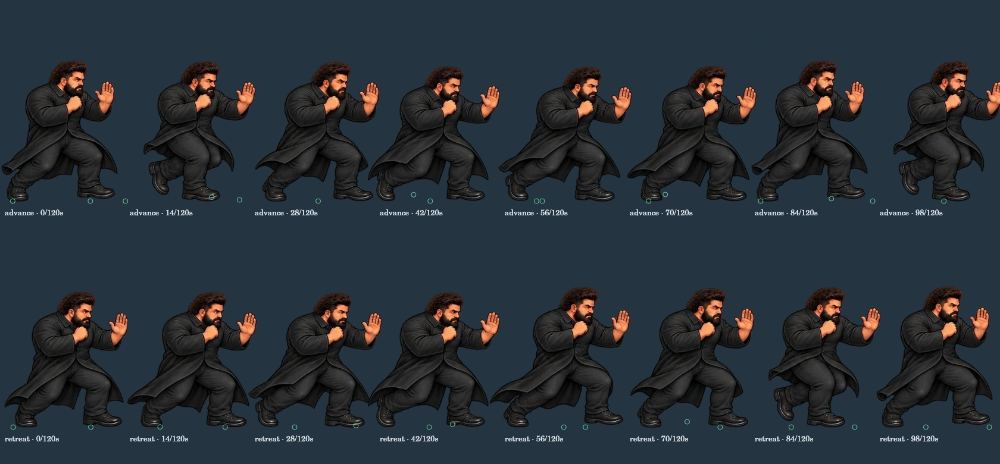
Antes · Passadas reais; círculos verdes são os pés físicos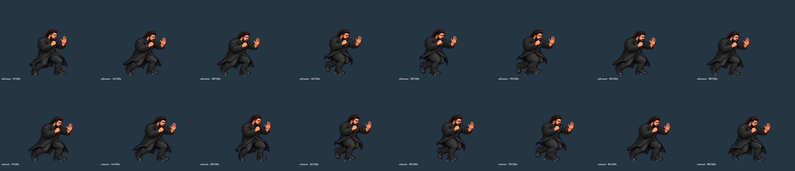
Depois · Passadas reais; círculos verdes são os pés físicos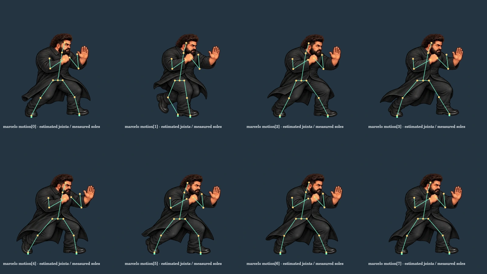
Juntas estimadas na arte e centros das solas medidos; não é certificação de anatomiabase
combat
style
motion
strike
reaction
low
Estados e espelhamento
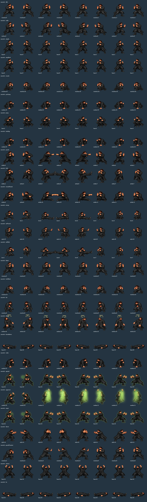
Antes · 27 estados amostrados; para transições reais, use a tela de combate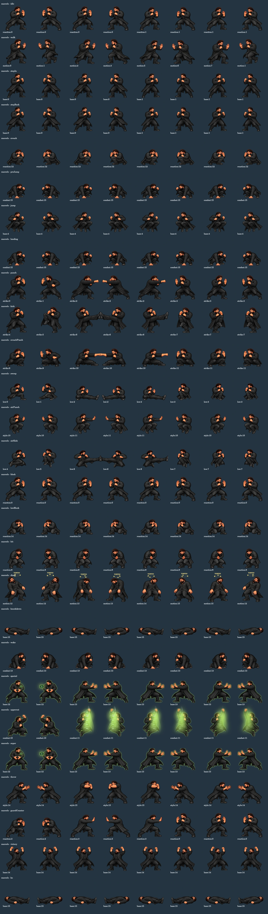
Depois · 27 estados amostrados; para transições reais, use a tela de combateRafael · 104 quadros
Identidade e contato no chão
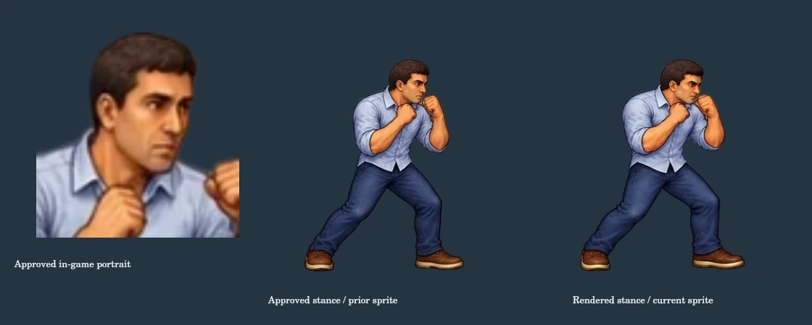
Antes · Retrato aprovado, postura original e postura renderizada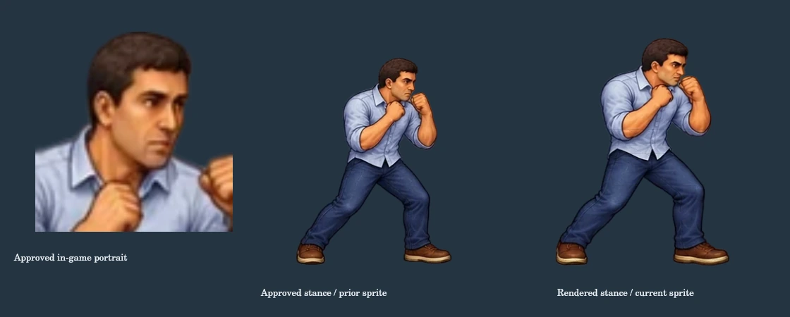
Depois · Retrato aprovado, postura original e postura renderizada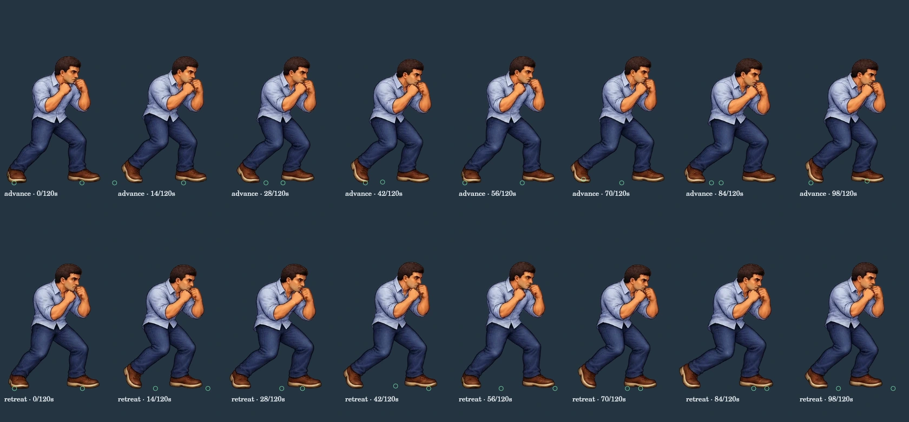
Antes · Passadas reais; círculos verdes são os pés físicos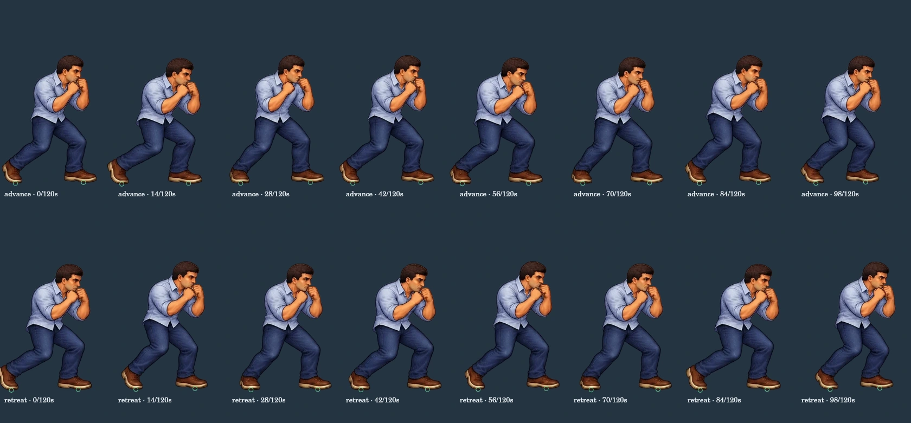
Depois · Passadas reais; círculos verdes são os pés físicos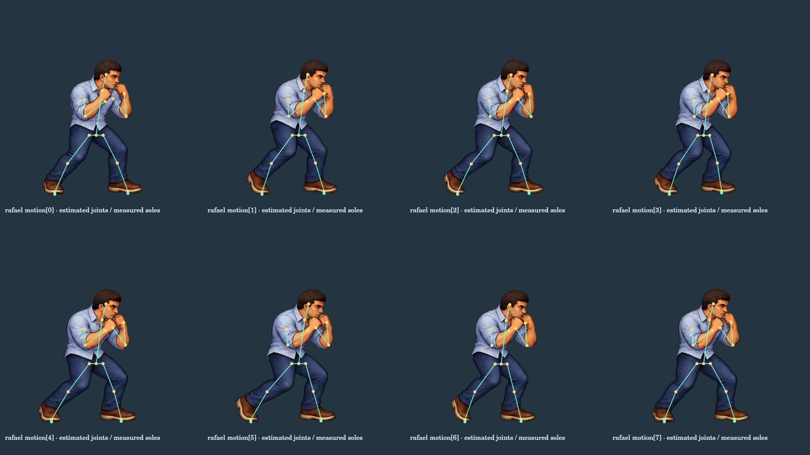
Juntas estimadas na arte e centros das solas medidos; não é certificação de anatomiabase
combat
style
Antes · rafael / style / todos os quadros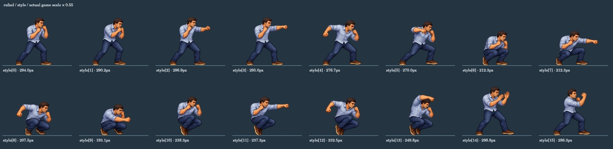
Depois · rafael / style / todos os quadros motion
strike
reaction
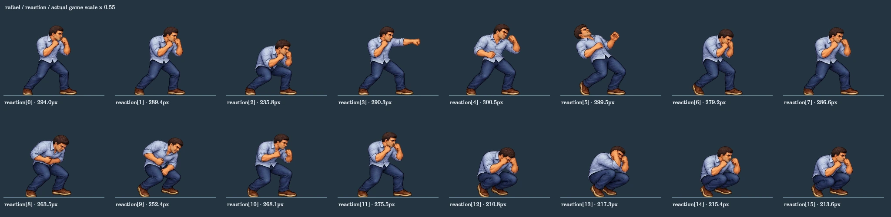
Antes · rafael / reaction / todos os quadrosDepois · rafael / reaction / todos os quadroslow
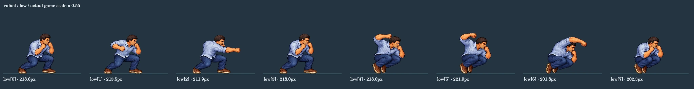
Antes · rafael / low / todos os quadrosDepois · rafael / low / todos os quadrosEstados e espelhamento
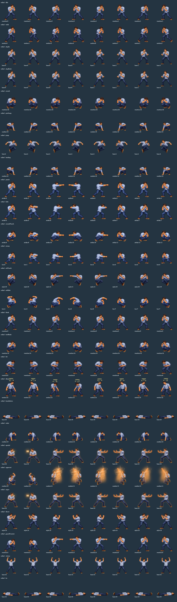
Antes · 27 estados amostrados; para transições reais, use a tela de combate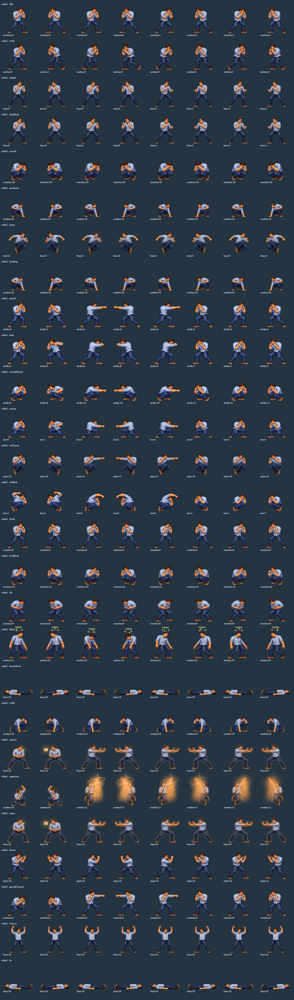
Depois · 27 estados amostrados; para transições reais, use a tela de combateGustavo · 104 quadros
Identidade e contato no chão
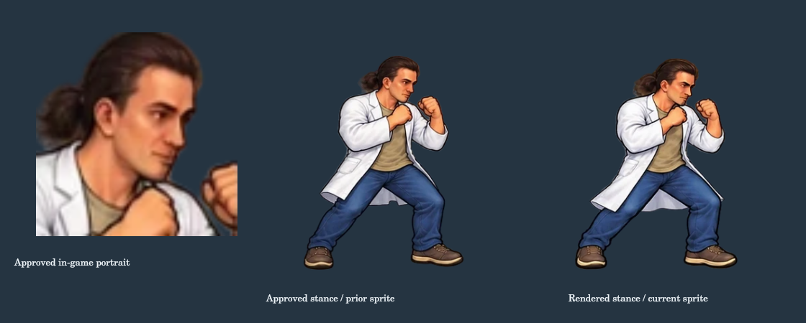
Antes · Retrato aprovado, postura original e postura renderizada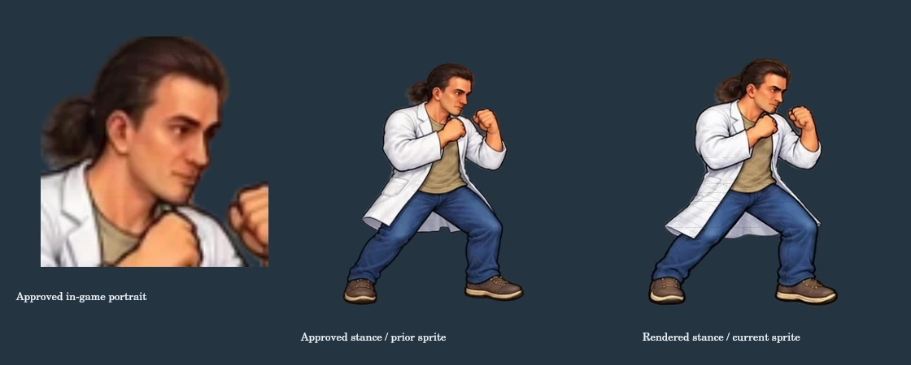
Depois · Retrato aprovado, postura original e postura renderizada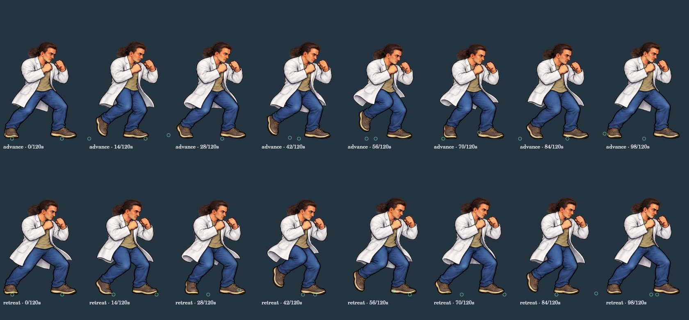
Antes · Passadas reais; círculos verdes são os pés físicos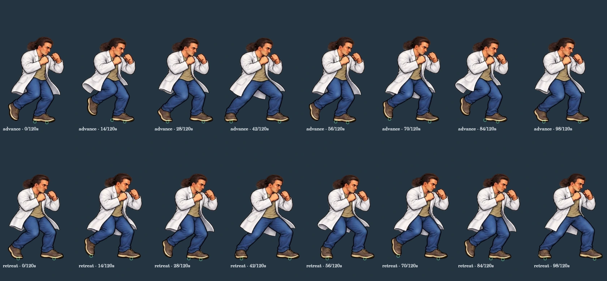
Depois · Passadas reais; círculos verdes são os pés físicos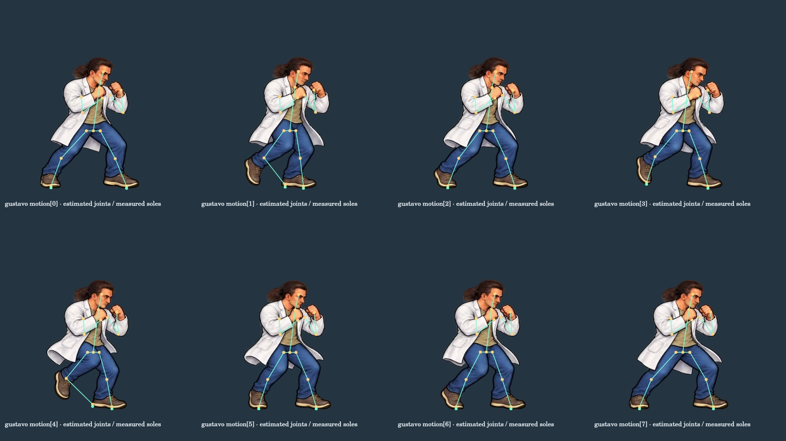
Juntas estimadas na arte e centros das solas medidos; não é certificação de anatomiabase
combat
 Antes · gustavo / combat / todos os quadros
Antes · gustavo / combat / todos os quadros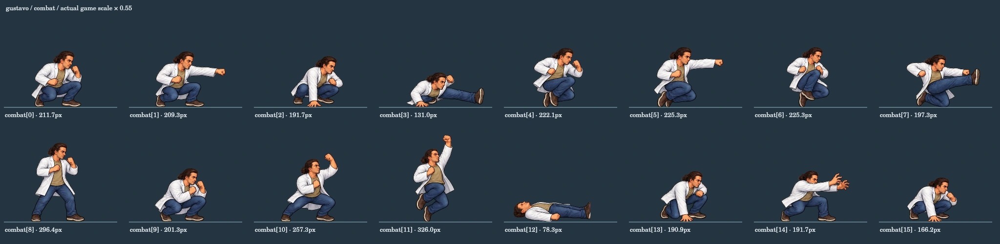
Depois · gustavo / combat / todos os quadrosstyle
motion
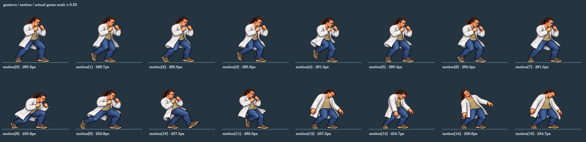
Antes · gustavo / motion / todos os quadrosDepois · gustavo / motion / todos os quadrosstrike
Antes · gustavo / strike / todos os quadrosDepois · gustavo / strike / todos os quadros reaction
Antes · gustavo / reaction / todos os quadrosDepois · gustavo / reaction / todos os quadros low
Antes · gustavo / low / todos os quadrosDepois · gustavo / low / todos os quadros Estados e espelhamento
Antes · 27 estados amostrados; para transições reais, use a tela de combateDepois · 27 estados amostrados; para transições reais, use a tela de combate Gelton · 40 quadros
Identidade e contato no chão
Antes · Retrato aprovado, postura original e postura renderizadaDepois · Retrato aprovado, postura original e postura renderizada Antes · Passadas reais; círculos verdes são os pés físicosDepois · Passadas reais; círculos verdes são os pés físicos Juntas estimadas na arte e centros das solas medidos; não é certificação de anatomiabase
Antes · gelton / base / todos os quadrosDepois · gelton / base / todos os quadros combat
Antes · gelton / combat / todos os quadrosDepois · gelton / combat / todos os quadros motion
Este clip ainda não integrava o atlas utilizado pelo renderer.
Depois · gelton / motion / todos os quadrosEstados e espelhamento
Antes · 27 estados amostrados; para transições reais, use a tela de combateDepois · 27 estados amostrados; para transições reais, use a tela de combate Marcelino · 40 quadros
Identidade e contato no chão
Antes · Retrato aprovado, postura original e postura renderizadaDepois · Retrato aprovado, postura original e postura renderizada Antes · Passadas reais; círculos verdes são os pés físicosDepois · Passadas reais; círculos verdes são os pés físicos Juntas estimadas na arte e centros das solas medidos; não é certificação de anatomiabase
Antes · marcelino / base / todos os quadrosDepois · marcelino / base / todos os quadros combat
Antes · marcelino / combat / todos os quadrosDepois · marcelino / combat / todos os quadros motion
Este clip ainda não integrava o atlas utilizado pelo renderer.
Depois · marcelino / motion / todos os quadrosEstados e espelhamento
Antes · 27 estados amostrados; para transições reais, use a tela de combateDepois · 27 estados amostrados; para transições reais, use a tela de combate Marcos · 40 quadros
Identidade e contato no chão
Antes · Retrato aprovado, postura original e postura renderizadaDepois · Retrato aprovado, postura original e postura renderizada Antes · Passadas reais; círculos verdes são os pés físicosDepois · Passadas reais; círculos verdes são os pés físicos Juntas estimadas na arte e centros das solas medidos; não é certificação de anatomiabase
Antes · marcos / base / todos os quadrosDepois · marcos / base / todos os quadros combat
Antes · marcos / combat / todos os quadrosDepois · marcos / combat / todos os quadros motion
Este clip ainda não integrava o atlas utilizado pelo renderer.
Depois · marcos / motion / todos os quadrosEstados e espelhamento
Antes · 27 estados amostrados; para transições reais, use a tela de combateDepois · 27 estados amostrados; para transições reais, use a tela de combate Joao · 40 quadros
Identidade e contato no chão
Antes · Retrato aprovado, postura original e postura renderizadaDepois · Retrato aprovado, postura original e postura renderizada Antes · Passadas reais; círculos verdes são os pés físicosDepois · Passadas reais; círculos verdes são os pés físicos Juntas estimadas na arte e centros das solas medidos; não é certificação de anatomiabase
Antes · joao / base / todos os quadros Depois · joao / base / todos os quadros
Depois · joao / base / todos os quadros combat
 Antes · joao / combat / todos os quadrosDepois · joao / combat / todos os quadros
Antes · joao / combat / todos os quadrosDepois · joao / combat / todos os quadrosmotion
Este clip ainda não integrava o atlas utilizado pelo renderer.
Depois · joao / motion / todos os quadrosEstados e espelhamento
Antes · 27 estados amostrados; para transições reais, use a tela de combateDepois · 27 estados amostrados; para transições reais, use a tela de combate Tais · 40 quadros
Identidade e contato no chão
Antes · Retrato aprovado, postura original e postura renderizadaDepois · Retrato aprovado, postura original e postura renderizada Antes · Passadas reais; círculos verdes são os pés físicosDepois · Passadas reais; círculos verdes são os pés físicos Juntas estimadas na arte e centros das solas medidos; não é certificação de anatomiabase
Antes · tais / base / todos os quadrosDepois · tais / base / todos os quadros combat
 Antes · tais / combat / todos os quadrosDepois · tais / combat / todos os quadros
Antes · tais / combat / todos os quadrosDepois · tais / combat / todos os quadrosmotion
Antes · tais / motion / todos os quadrosDepois · tais / motion / todos os quadros Estados e espelhamento
Antes · 27 estados amostrados; para transições reais, use a tela de combateDepois · 27 estados amostrados; para transições reais, use a tela de combate Luciana · 40 quadros
Identidade e contato no chão
Antes · Retrato aprovado, postura original e postura renderizadaDepois · Retrato aprovado, postura original e postura renderizada Antes · Passadas reais; círculos verdes são os pés físicosDepois · Passadas reais; círculos verdes são os pés físicos Juntas estimadas na arte e centros das solas medidos; não é certificação de anatomiabase
Antes · luciana / base / todos os quadrosDepois · luciana / base / todos os quadros combat
 Antes · luciana / combat / todos os quadrosDepois · luciana / combat / todos os quadros
Antes · luciana / combat / todos os quadrosDepois · luciana / combat / todos os quadrosmotion
Antes · luciana / motion / todos os quadrosDepois · luciana / motion / todos os quadros Estados e espelhamento
Antes · 27 estados amostrados; para transições reais, use a tela de combateDepois · 27 estados amostrados; para transições reais, use a tela de combate Khauany · 48 quadros
Identidade e contato no chão
Antes · Retrato aprovado, postura original e postura renderizadaDepois · Retrato aprovado, postura original e postura renderizada Antes · Passadas reais; círculos verdes são os pés físicosDepois · Passadas reais; círculos verdes são os pés físicos Juntas estimadas na arte e centros das solas medidos; não é certificação de anatomiabase
Antes · khauany / base / todos os quadrosDepois · khauany / base / todos os quadros combat
Antes · khauany / combat / todos os quadrosDepois · khauany / combat / todos os quadros sweep
Este clip ainda não integrava o atlas utilizado pelo renderer.
Depois · khauany / sweep / todos os quadrosairkick
Este clip ainda não integrava o atlas utilizado pelo renderer.
Depois · khauany / airkick / todos os quadrosmotion
Antes · khauany / motion / todos os quadrosDepois · khauany / motion / todos os quadros Estados e espelhamento
Antes · 27 estados amostrados; para transições reais, use a tela de combateDepois · 27 estados amostrados; para transições reais, use a tela de combate Dienes · 48 quadros
Identidade e contato no chão
Antes · Retrato aprovado, postura original e postura renderizadaDepois · Retrato aprovado, postura original e postura renderizada Antes · Passadas reais; círculos verdes são os pés físicosDepois · Passadas reais; círculos verdes são os pés físicos Juntas estimadas na arte e centros das solas medidos; não é certificação de anatomiabase
Antes · dienes / base / todos os quadrosDepois · dienes / base / todos os quadros combat
Antes · dienes / combat / todos os quadrosDepois · dienes / combat / todos os quadros damage
Este clip ainda não integrava o atlas utilizado pelo renderer.
Depois · dienes / damage / todos os quadroswin
Este clip ainda não integrava o atlas utilizado pelo renderer.
Depois · dienes / win / todos os quadrosgetup
Este clip ainda não integrava o atlas utilizado pelo renderer.
Depois · dienes / getup / todos os quadrosmotion
Antes · dienes / motion / todos os quadrosDepois · dienes / motion / todos os quadros Estados e espelhamento
Antes · 27 estados amostrados; para transições reais, use a tela de combateDepois · 27 estados amostrados; para transições reais, use a tela de combate Ruan · 40 quadros
Identidade e contato no chão
Antes · Retrato aprovado, postura original e postura renderizadaDepois · Retrato aprovado, postura original e postura renderizada Antes · Passadas reais; círculos verdes são os pés físicosDepois · Passadas reais; círculos verdes são os pés físicos Juntas estimadas na arte e centros das solas medidos; não é certificação de anatomiabase
Antes · ruan / base / todos os quadrosDepois · ruan / base / todos os quadros combat
Antes · ruan / combat / todos os quadrosDepois · ruan / combat / todos os quadros motion
Este clip ainda não integrava o atlas utilizado pelo renderer.
Depois · ruan / motion / todos os quadrosEstados e espelhamento
Antes · 27 estados amostrados; para transições reais, use a tela de combateDepois · 27 estados amostrados; para transições reais, use a tela de combate Os 16 modelos da campanha
Drone de lanches · snack
Antes · Arte anterior / sequência atual ou mecanismo articuladoDepois · Arte anterior / sequência atual ou mecanismo articulado Renderer real: caminhar, atacar, receber dano e derrotar; IA originalCatraca de serras · turnstile
Antes · Arte anterior / sequência atual ou mecanismo articuladoDepois · Arte anterior / sequência atual ou mecanismo articulado Renderer real: caminhar, atacar, receber dano e derrotar; IA originalRobô de limpeza · cleaner
Antes · Arte anterior / sequência atual ou mecanismo articuladoDepois · Arte anterior / sequência atual ou mecanismo articulado Renderer real: caminhar, atacar, receber dano e derrotar; IA originalAndroide de laboratório · lab
Antes · Arte anterior / sequência atual ou mecanismo articuladoDepois · Arte anterior / sequência atual ou mecanismo articulado Renderer real: caminhar, atacar, receber dano e derrotar; IA originalProveta explosiva · vial
Antes · Arte anterior / sequência atual ou mecanismo articuladoDepois · Arte anterior / sequência atual ou mecanismo articulado Renderer real: caminhar, atacar, receber dano e derrotar; IA originalScanner laser · scanner
Antes · Arte anterior / sequência atual ou mecanismo articuladoDepois · Arte anterior / sequência atual ou mecanismo articulado Renderer real: caminhar, atacar, receber dano e derrotar; IA originalLivro virtual · book
Antes · Arte anterior / sequência atual ou mecanismo articuladoDepois · Arte anterior / sequência atual ou mecanismo articulado Renderer real: caminhar, atacar, receber dano e derrotar; IA originalDrone arqueólogo · archaeologist
Antes · Arte anterior / sequência atual ou mecanismo articuladoDepois · Arte anterior / sequência atual ou mecanismo articulado Renderer real: caminhar, atacar, receber dano e derrotar; IA originalGuarda cibernético · elite
Antes · Arte anterior / sequência atual ou mecanismo articuladoDepois · Arte anterior / sequência atual ou mecanismo articulado Renderer real: caminhar, atacar, receber dano e derrotar; IA originalProtótipo de Kung Fu · kungfu
Antes · Arte anterior / sequência atual ou mecanismo articuladoDepois · Arte anterior / sequência atual ou mecanismo articulado Renderer real: caminhar, atacar, receber dano e derrotar; IA originalInspetor-Geral do Bloco A · inspector
Antes · Arte anterior / sequência atual ou mecanismo articuladoDepois · Arte anterior / sequência atual ou mecanismo articulado Renderer real: caminhar, atacar, receber dano e derrotar; IA originalRobô de Bordo da Feira de Ciências · fairRobot
Antes · Arte anterior / sequência atual ou mecanismo articuladoDepois · Arte anterior / sequência atual ou mecanismo articulado Renderer real: caminhar, atacar, receber dano e derrotar; IA originalProfessor Substituto Corrompido · substitute
Antes · Arte anterior / sequência atual ou mecanismo articuladoDepois · Arte anterior / sequência atual ou mecanismo articulado Renderer real: caminhar, atacar, receber dano e derrotar; IA originalA.U.L.A. 3.0 · Holograma · aula
Antes · Arte anterior / sequência atual ou mecanismo articuladoDepois · Arte anterior / sequência atual ou mecanismo articulado Renderer real: caminhar, atacar, receber dano e derrotar; IA originalA.U.L.A. 3.0 · Exoesqueleto · exo
Antes · Arte anterior / sequência atual ou mecanismo articuladoDepois · Arte anterior / sequência atual ou mecanismo articulado Renderer real: caminhar, atacar, receber dano e derrotar; IA originalProjetor corrompido · projector
Antes · Arte anterior / sequência atual ou mecanismo articuladoDepois · Arte anterior / sequência atual ou mecanismo articulado Renderer real: caminhar, atacar, receber dano e derrotar; IA originalCenas completas e objetos da campanha
Quatro atos e quatro chefes
Campanha / act / 1 / Renderer do jogoCampanha / act / 2 / Renderer do jogoCampanha / act / 3 / Renderer do jogoCampanha / act / 4 / Renderer do jogoCampanha / boss / 1 / Renderer do jogoCampanha / boss / 2 / Renderer do jogoCampanha / boss / 3 / Renderer do jogoCampanha / boss / 4 / Renderer do jogo Marcelo · cadeira e deslocamento
marcelo / 1 / compositor real; deslocamento usa a simulaçãomarcelo / -1 / compositor real; deslocamento usa a simulaçãomarcelo / walk / compositor real; deslocamento usa a simulação Rafael · cadeira e deslocamento
rafael / 1 / compositor real; deslocamento usa a simulaçãorafael / -1 / compositor real; deslocamento usa a simulaçãorafael / walk / compositor real; deslocamento usa a simulação Gustavo · cadeira e deslocamento
gustavo / 1 / compositor real; deslocamento usa a simulaçãogustavo / -1 / compositor real; deslocamento usa a simulação gustavo / walk / compositor real; deslocamento usa a simulação
gustavo / walk / compositor real; deslocamento usa a simulação Gelton · cadeira e deslocamento
gelton / 1 / compositor real; deslocamento usa a simulaçãogelton / -1 / compositor real; deslocamento usa a simulaçãogelton / walk / compositor real; deslocamento usa a simulação Marcelino · cadeira e deslocamento
marcelino / 1 / compositor real; deslocamento usa a simulaçãomarcelino / -1 / compositor real; deslocamento usa a simulaçãomarcelino / walk / compositor real; deslocamento usa a simulação Marcos · cadeira e deslocamento
marcos / 1 / compositor real; deslocamento usa a simulaçãomarcos / -1 / compositor real; deslocamento usa a simulaçãomarcos / walk / compositor real; deslocamento usa a simulação Joao · cadeira e deslocamento
joao / 1 / compositor real; deslocamento usa a simulaçãojoao / -1 / compositor real; deslocamento usa a simulaçãojoao / walk / compositor real; deslocamento usa a simulação Tais · cadeira e deslocamento
tais / 1 / compositor real; deslocamento usa a simulaçãotais / -1 / compositor real; deslocamento usa a simulaçãotais / walk / compositor real; deslocamento usa a simulação Luciana · cadeira e deslocamento
luciana / 1 / compositor real; deslocamento usa a simulaçãoluciana / -1 / compositor real; deslocamento usa a simulaçãoluciana / walk / compositor real; deslocamento usa a simulação Khauany · cadeira e deslocamento
khauany / 1 / compositor real; deslocamento usa a simulação khauany / -1 / compositor real; deslocamento usa a simulaçãokhauany / walk / compositor real; deslocamento usa a simulação
khauany / -1 / compositor real; deslocamento usa a simulaçãokhauany / walk / compositor real; deslocamento usa a simulação Dienes · cadeira e deslocamento
dienes / 1 / compositor real; deslocamento usa a simulaçãodienes / -1 / compositor real; deslocamento usa a simulaçãodienes / walk / compositor real; deslocamento usa a simulação Ruan · cadeira e deslocamento
ruan / 1 / compositor real; deslocamento usa a simulaçãoruan / -1 / compositor real; deslocamento usa a simulação ruan / walk / compositor real; deslocamento usa a simulação
ruan / walk / compositor real; deslocamento usa a simulação